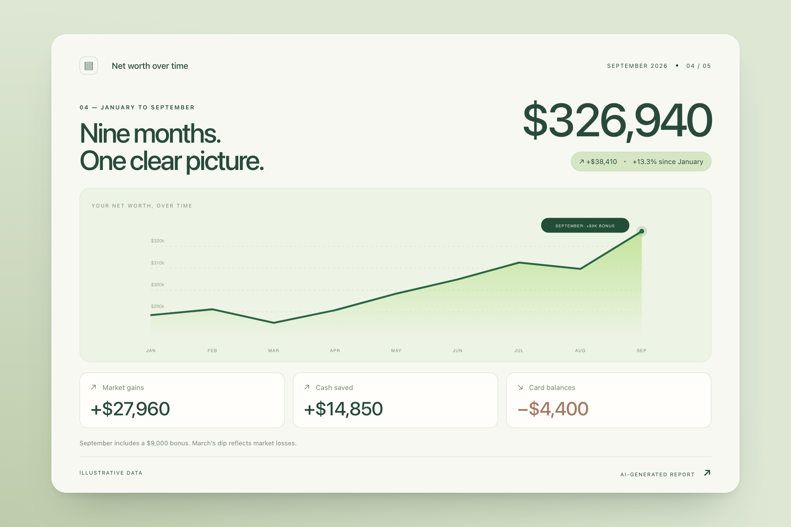

fin
fin- 01Monthly spending review
- 02Subscription audit
- 03Investment overview
- 04Amazon, itemized
- 05Net worth over time
“Show how my net worth changed this year.”
Chart it month by month and explain what moved it.


you › Use fin, my local command-line tool for my bank and brokerage data (run `fin help` to see its commands), to create a polished visual report with charts and a concise summary: Show how my net worth changed this year. Chart it month by month and explain what moved it.
The app opens with this prompt filled in; read it, then press Enter. It needs fin installed and connected to your accounts, so set it up first if you haven't.
// AI-generated report · illustrative data
fin supplies the data. Your agent creates the layout, charts, and analysis.
